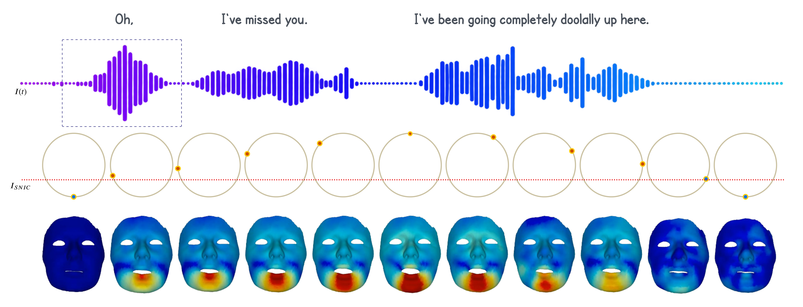
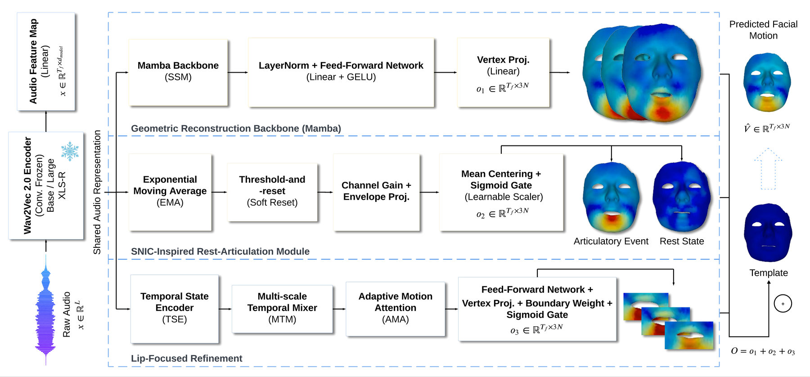
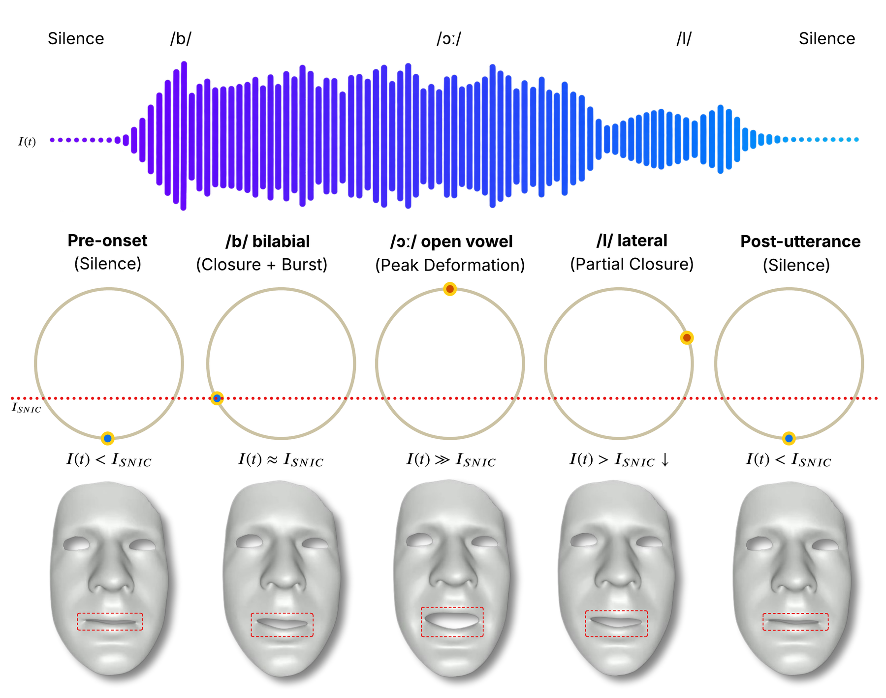

Fig. 1. SNICTalk drives facial animation through SNIC-inspired dynamics. As speech energy crosses the threshold ISNIC, the phase sweeps around its invariant circle, shown here across an utterance, acting as a bias that shapes the predicted rest–articulation dynamics.
Speech-driven 3D facial animation requires both accurate facial geometry and realistic temporal dynamics. Natural speech alternates between active articulatory events and lower-motion intervals, whereas data-driven sequence models often produce temporally averaged trajectories with residual motion or reduced-amplitude articulation. We address this limitation by introducing a dynamical prior inspired by the qualitative behavior of Saddle-Node on Invariant Circle (SNIC) bifurcations.
SNICTalk is a three-component architecture that separates global geometric reconstruction, rest-articulation dynamics, and local lip-focused refinement. A Mamba-based reconstruction backbone predicts global facial motion from speech features, and the SNIC-inspired temporal module introduces threshold-dependent transitions between near-rest and active articulation via an audio-driven leaky state with a differentiable reset mechanism. A complementary lip-focused refinement component sharpens local temporal coordination and fine-grained articulatory motion using oscillator-conditioned temporal features, multi-scale temporal mixing, and content-dependent attention.
Experiments on BIWI and VOCASET show strong geometric reconstruction and motion-dynamics performance.
An effective talking head must reproduce the rich temporal dynamics of human articulation; the sudden jaw opening at vowel onset, the brief bilabial closure of stop consonants, and the return of the face to its neutral resting position during inter-word pauses. These properties are episodic and threshold-driven, punctuated by genuine rest states, rather than independent frame-level phenomena. Many recent systems, however, formulated as sequence prediction or regression, can achieve low geometric reconstruction error while still producing trajectories with reduced motion diversity, residual movement during low-motion intervals, or attenuated articulatory events; not because existing methods fail outright, but because nothing in a standard reconstruction objective encodes this rhythmic structure explicitly.
We take our inspiration from the qualitative behavior of the Saddle-Node on Invariant Circle (SNIC) bifurcation. Jia et al. (Nature, 2023) found that cardiac cells in the developing zebrafish embryonic heart operate near a SNIC bifurcation, where a stable rest state and an activation threshold coexist as fixed points on a closed orbit in phase space. As a continuous drive parameter crosses a critical value, the two fixed points collide and annihilate, releasing the orbit to circulate freely; yet the trajectory still slows dramatically near the location of the annihilated rest state, the ghost zone, with dwell time scaling as (I − ISNIC)−1/2. This lets the system oscillate at an arbitrarily low frequency near threshold and rest effectively during periods of low drive; a useful conceptual model for speech, where articulatory events emerge from low-motion states and return toward them as the signal changes.
SNICTalk does not numerically simulate the canonical continuous-time SNIC system, nor claim mathematical equivalence to biological pacemaker dynamics. Instead, SNIC theory motivates a differentiable temporal module that preserves the functional properties most relevant to facial animation: threshold-dependent activation, low-motion behavior below the activation boundary, and continuous modulation of activity by the speech signal.

Fig. 2. Shared Wav2Vec 2.0 audio features are processed by three complementary components: a Mamba-based geometric reconstruction backbone (o1), a SNIC-inspired rest-articulation module using a threshold-and-reset mechanism (o2), and a lip-focused refinement component; Temporal State Encoder (TSE), Multi-scale Temporal Mixer (MTM), Adaptive Motion Attention (AMA); producing a spatially localized correction (o3). The three outputs are summed with the neutral template to produce the final predicted facial motion.
SNICTalk separates the problem into three complementary components, each processing a shared, frozen-convolution Wav2Vec2 (XLSR-53) audio representation. The geometric reconstruction backbone is a selective state-space model (Mamba) with LayerNorm and a GELU feed-forward network, predicting the primary per-frame vertex displacement; its output projection is zero-initialized so the network begins training from the neutral template. The SNIC-inspired rest-articulation module integrates an audio-conditioned drive over time via a leaky exponential moving average, applies a learned, differentiable threshold-and-reset (soft reset) once the state approaches an activation threshold, and projects the result to a mean-centered, sigmoid-gated vertex correction; distinguishing near-rest intervals from active articulatory events without explicit rest-state supervision. The lip-focused refinement component chains a Temporal State Encoder (a smaller instance of the same threshold-and-reset mechanism), a Multi-scale Temporal Mixer that combines causal dilated convolutions at three time scales, and Adaptive Motion Attention over eight learned latent motion components, before projecting a Gaussian-weighted correction restricted to the lip region.

Fig. 3. Conceptual illustration of the SNIC-inspired rest-articulation dynamics for the utterance “ball.” During silence, the audio-conditioned input I(t) stays below the activation threshold ISNIC, corresponding to a near-rest facial configuration. Around the onset of /b/, I(t) approaches threshold; during the vowel /O:/, I(t) far exceeds it, corresponding to peak facial deformation; as articulation decreases through /l/, the input decays back toward the low-activity regime; after the utterance, I(t) falls below threshold and the face returns toward near-rest. The circular diagrams are a conceptual visualization and not exact numerical phase-space trajectories of a canonical SNIC oscillator.
The dwell time near the ghost of the annihilated rest state diverges as the drive approaches threshold from below, letting the rest-articulation module idle indefinitely during silence while still transitioning continuously into rapid articulation as speech energy rises; a threshold-sensitive representation of rest–articulation transitions that remains fully differentiable over long sequences.
SNICTalk achieves the best result on six of eight metrics on BIWI6 (MVE, LVE, MOD, AE, FDD, FFE) and five of eight on VOCASET (MVE, LVE, AE, FDD, FFE) against nine state-of-the-art baselines, with the gains most pronounced on geometric accuracy and dynamics-diversity metrics.
| Method (BIWI6) | MVE ↓ | LVE ↓ | MOD ↓ | VE ↓ | AE ↓ | TC ↓ | FDD ↓ | FFE ↓ |
|---|---|---|---|---|---|---|---|---|
| FaceFormer (CVPR 22) | 2.4821 | 3.6900 | 6.6621 | 5.7173 | 7.4978 | 4.9266 | 3.8124 | 3.8601 |
| SelfTalk (ACM MM 23) | 2.4656 | 3.6019 | 6.6135 | 6.1284 | 7.5776 | 4.9976 | 4.5670 | 3.8310 |
| PTalker (ACM MM 25) | 2.7742 | 4.1387 | 6.7655 | 5.0041 | 7.6241 | 4.1569 | 5.1227 | 4.7852 |
| JambaTalk (ACM TOMM 26) | 2.4135 | 3.5744 | 6.5691 | 5.9408 | 7.3323 | 5.0528 | 3.9094 | 3.6629 |
| SNICTalk (Ours) | 2.3776 | 3.5238 | 6.4816 | 5.5974 | 7.2375 | 4.3759 | 3.6898 | 3.6328 |
| Method (VOCASET) | MVE ↓ | LVE ↓ | MOD ↓ | VE ↓ | AE ↓ | TC ↓ | FDD ↓ | FFE ↓ |
|---|---|---|---|---|---|---|---|---|
| SelfTalk (ACM MM 23) | 0.8475 | 3.0535 | 1.8317 | 1.2953 | 2.0130 | 0.7840 | 0.7613 | 0.6752 |
| MemoryTalker (ICCV 25) | 0.8452 | 2.9995 | 1.7505 | 1.0548 | 1.9218 | 0.7757 | 0.8224 | 0.6585 |
| JambaTalk (ACM TOMM 26) | 0.8311 | 3.0900 | 1.8128 | 1.2347 | 1.9551 | 0.7339 | 0.8554 | 0.6730 |
| SNICTalk (Ours) | 0.8264 | 2.9292 | 1.7974 | 1.2608 | 1.9073 | 0.7672 | 0.7610 | 0.6397 |
MVE / LVE in ×10−3 m; MOD / VE / AE / TC / FDD / FFE in ×10−4 m. Full nine-baseline comparison across BIWI and VOCASET is reported in the paper.
The geometric reconstruction backbone alone performs worst on all eight metrics, confirming neither correction component is redundant with the backbone in isolation. Adding either the rest-articulation module or lip-focused refinement individually improves most metrics; the full model achieves the best or second-best result on all eight, with its advantage concentrated in LVE, VE, TC, and FDD, while the configuration without lip-focused refinement is marginally better on MVE, AE, and FFE; a trade-off consistent with lip-focused refinement acting as a targeted, rather than global, correction.
| Configuration | MVE ↓ | LVE ↓ | TC ↓ | FDD ↓ |
|---|---|---|---|---|
| Geometric Reconstruction only | 2.4211 | 3.5777 | 4.7165 | 4.4150 |
| w/o Rest-Articulation Module | 2.3816 | 3.5654 | 4.5245 | 4.2150 |
| w/o Lip-Focused Refinement | 2.3722 | 3.5389 | 4.5756 | 3.8553 |
| SNICTalk (ours) | 2.3776 | 3.5238 | 4.3759 | 3.6898 |
BIWI6 Test-B. ×10−3 m (MVE, LVE), ×10−4 m (TC, FDD). Loss-term and sub-module ablations are reported in the paper.
32 participants on Amazon Mechanical Turk compared SNICTalk against six baselines in a forced-choice A/B test on realism and lip-sync, on one representative sample each from VOCASET and BIWI6, with method identity withheld and left/right placement randomized.
| Comparison | VOCASET; Realism | BIWI6; Realism |
|---|---|---|
| Ours vs. JambaTalk | 65.6% ours | 93.8% ours |
| Ours vs. CodeTalker | 78.1% ours | 73.3% ours |
| Ours vs. MemoryTalker | 75.0% ours | 71.9% ours |
| Ours vs. TalkingStyle | 81.3% ours | 54.8% ours |
| Ours vs. FaceFormer | 84.4% ours | 65.6% ours |
| Ours vs. FaceDiffuser | 68.8% ours | 59.4% ours |
Lip-sync results follow the same pattern; the largest margin is against JambaTalk on BIWI6, the smallest against TalkingStyle on the same dataset.
@inproceedings{jafari2027snictalk,
title = {SNICTalk: SNIC-Inspired Dynamics for Temporally Coherent
Speech-Driven 3D Facial Animation},
author = {Jafari, Farzaneh and Basu, Anup},
booktitle = {Computer Graphics Forum (Proc. EUROGRAPHICS)},
volume = {46},
number = {2},
year = {2027}
}